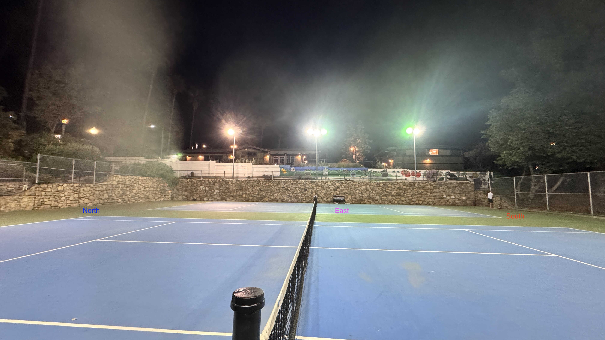
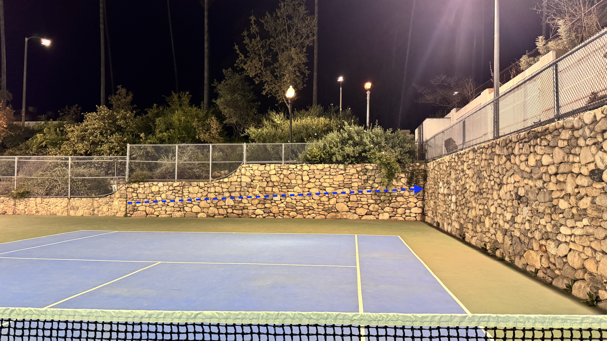

Washington Park Traverse Wall
The Washington Park traverse wall is a river rock wall that lines the tennis courts at the park. Most summer nights, you'll find locals playing tennis or soccer on the courts, which poses a safety risk for climbing. For most of the stuff here, pads are not necessary. The walls here are named directionally so, North Wall, East Wall, South Wall.

Projects and lines that haven't been completed here are:
- Full traverse of all walls in either direction
- Traverses of the east wall
- Traverses of the south wall
- Literally any other traverse us gumbies can think of
North Wall
Asaadud V1
FKA: Matthew Jackson 3/47/2024
Traverse from left to right on the wall. Start in that kinda dividing crack thingy by the post and move right while avoiding the entire top of the wall that's flat.
